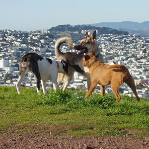
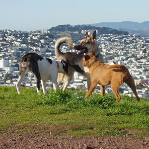

Explore!
Bernal is dominated by narrow tree-lined streets winding around the hill. It's a cozy, friendly neighborhood. On walks in the neighborhood you can encounter cute older homes, some surviving since the early 1900s, with interesting architectural detail, artistic decorations applied by local artisans and homeowners, plantings tucked into every nook and cranny.
Cortland Avenue has the main share of shops and restaurants, its own grocery store, The Good Life, and a branch of the public library. There are two parks, Precita and Holly Parks, with playgrounds for little tykes. Dogs have free range on Bernal Heights Summit, where everyone enjoys the views. Bernal also has the popular Farmers Market on Saturday and the Flea Market on Sundays at Alemany Blvd at the southeast base of the hill. People are attracted to the annual hillwide garage sale in August and the popular Fiesta on the Hill in October. So, there's plenty to interest everyone in this neighborhood.

 
